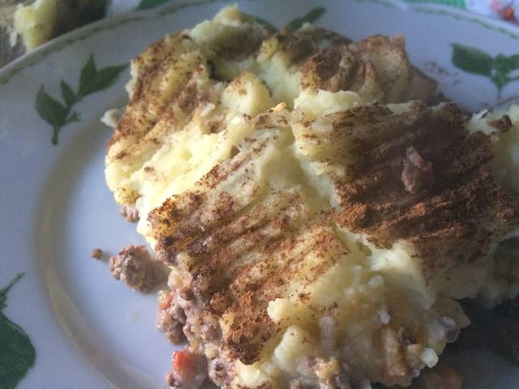
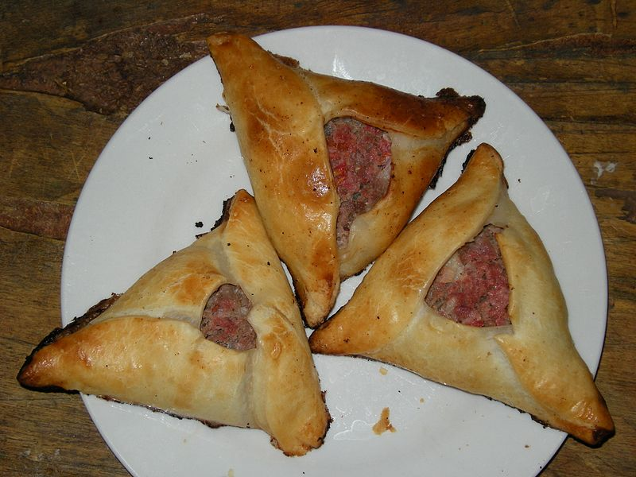

Cocinando
El blog de los amantes de la gastronomía
Favoritos:


Pastel de papas mendocino
Calienta el aceite en una sartén grande y sofríe la cebolla, el puerro y el morrón, 3'. Como vez en las fotos, la cantidad de cebolla, etc. es equivalente a la de carne. Cuando estén transparentes, agrega la carne, desarmándola para que no quede un masacote. Revuelve bien. Incorpora los aliños, mezcla y tapa hasta cocinar bien la carne, a fuego bajo para que no pierda los jugos. Te tomará unos 20'. Mientras tanto, prepara el puré y haz un huevo duro. Yo calculo dos papas medianas (del tamaño de mi palma) por persona. Para hacer este puré rápidamente, pelo y corto en trozos las papas y las echo en agua hirviendo, con un poquito de sal. En 10' ya estarán blandas. Haz el puré sin agua de cocción. Agrega solo un poquitín si te hace falta. Adereza con un poco de aceite de oliva y sal. Debe quedar compacto pero que no se desgrane. Arma el pastel colocando una capa generosa de picadillo. Añade el huevo, las aceitunas y las pasas. Si a todos les gustan las pasas, es mejor agregarlas al picadillo un par de minutos antes de terminar la cocción. Cubre todo con el puré, formando una capa de unos 2 cm. Espolvorea el azúcar y la canela (en el mío, 1/2 y 1/2, porque a mi marido no le gusta con canela). Lleva a horno bien caliente unos minutos para hacer una costra al puré. Sirve bien caliente.
Empanadas
Una empanada es una fina masa de pan, masa quebrada u hojaldre rellena con una preparación salada o dulce y cocida al horno o frita. El relleno puede incluir carnes rojas o blancas, pescado, verduras o fruta. La masa, generalmente, es de harina de trigo –aunque también puede usarse harina de maíz u otros cereales– y suele llevar alguna grasa, aceite o manteca. Las empanadas son un plato tradicional de la mayoría de las cocinas de los países de habla hispana.